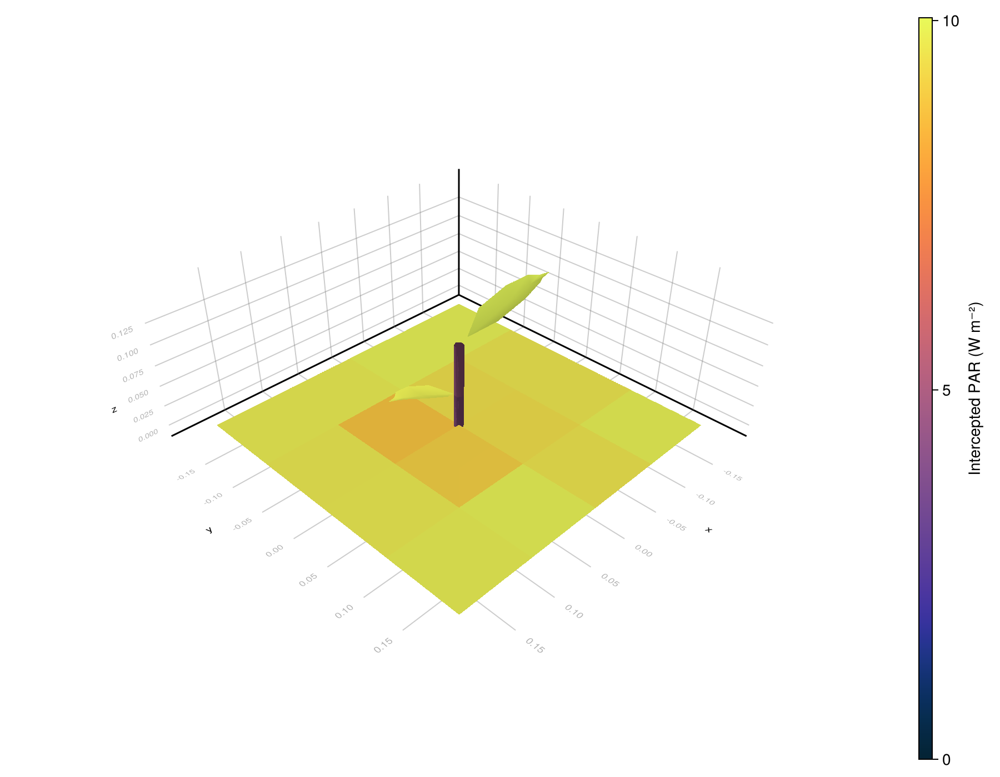

Tutorial: File-Based Workflow
This tutorial is the standard ARCHIMED workflow: a scene on disk, one or more model files, a meteo CSV, and a config.yml that ties them together.
It uses the deliberately small fixture under example_1/, because every file is compact enough to read directly. For the live figure in this page, the tutorial disables the dense automatic paving requested by plot_paving: 80 and replaces it with a compact explicit ground patch, so the soil interception is visible and the plant does not disappear in a sea of tiny tiles.
Directory Layout
The example folder contains:
example_1/
├── README.md
├── config.yml
├── meteo.csv
├── model_simple.yml
├── model_soil.yml
├── full_featured_example.jl
└── scene/
├── simple.ops
└── opf/simple_OPF_shapes.opfThe roles of those files are:
config.yml: top-level wiring, global light options, and file pathssimple.ops: scene placement, plot bounds, and functional-group assignmentsimple_OPF_shapes.opf: plant topology and meshesmodel_simple.yml,model_soil.yml: optical properties by functional group and typemeteo.csv: one or more simulation time stepsfull_featured_example.jl: the publicread_simulation/run_lightworkflow
Step 1: Load Everything From The Config
using ArchimedLight
using PlantGeom
repo_root = normpath(joinpath(dirname(pathof(ArchimedLight)), ".."))
config = joinpath(repo_root, "example_1", "config.yml")
sim, meteo = read_simulation(config; plot_paving_override=0)
scene = sim.scene
add_ground!(
scene;
nx=4,
ny=4,
xy_bounds=(-0.18, -0.18, 0.18, 0.18),
group="pavement",
type="Cobblestone",
)
rows = collect(meteo)1-element Vector{PlantMeteo.TimeStepRow{@NamedTuple{date::Union{Missing, Dates.Date}, hour_start::Dates.Time, hour_end::Dates.Time, temperature::Int64, relativeHumidity::Int64, wind::Int64, RI_PAR_f::Int64, RI_custom_f::Int64}}}:
╭──── TimeStepRow ─────────────────────────────────────────────────────────────╮
│ Step 1: date=2016-06-12, hour_start=08:00:00, hour_end=08:30:00, temperat │
│ ure=14, relativeHumidity=70, wind=1, RI_PAR_f=10, RI_custom_f=10 │
╰──────────────────────────────────────────────────────────────────────────────╯At this point:
optionsis aLightOptionssceneis aPlantGeom.SceneGeometrymeteois aPlantMeteo.TimeStepTablemodelsis aLightModels
The soil optics still come from model_soil.yml. The only thing changed here is how the paving geometry is materialized for the demonstration figure.
Step 2: Run One Step Or A Whole Series
For a single time step:
row = first(rows)
step = run_light(sim, row)LightStepResult
------------------------------------------------------------
sky PAR 10 W m^-2 | NIR 10.833 W m^-2
sun azimuth 72° | elevation 36.6°
mix direct 0% | diffuse 100% | SW 20.833 W m^-2
turtle 17 sectors (sky=16, sun=1)
------------------------------------------------------------
incident PAR 2.35 kJ | NIR 2.691 kJ
absorbed PAR 1.997 kJ | NIR 269.054 J
scattering on | iterations 3 | converged true
added PAR 16.736 J | NIR 163.102 J
extra bandsCUSTOM 10 W m^-2
------------------------------------------------------------
For every meteo row:
series = run_light(sim, meteo)Enabling LightOptions(cache_radiation=true) allows run_light to reuse directional responses across meteo rows on the same scene, substantially improving performance.
Step 3: Inspect The Budget
budget = step.budget
budget.incident_flux.initial.par
budget.incident_flux.total.par
budget.absorbed_energy.total.parCommon reading patterns are:
- first-order only:
budget.incident_flux.initial.par - with scattering:
budget.incident_flux.total.par - incident energy:
budget.incident_energy.total.par - absorbed quantities:
budget.absorbed_flux.total.par
Incident light is the light that arrives on the object. This light can then be absorbed, transmitted, or reflected. Absorbed light is the portion of the incident light that is absorbed by the object, while transmitted light is the portion that passes through the object, and reflected light is the portion that bounces off the surface of the object. Both incident and absorbed quantities are important for understanding the energy balance and photosynthetic activity of plants. Incident flux is more relevant for visualisation and export, while absorbed energy is more relevant for photosynthesis and energy balance.
Flux values are in W m^-2 and energy values are in J per component per step. The wavebands are par for photosynthetically active radiation, nir for near-infrared, and any extra shortwave bands present in the meteo file.
Step 4: Write Results Back Onto The Scene
After computing the light interception, you can attach the results back onto the scene for visualization or export. This is done with the attach_light_step! function, which takes the scene, the light step result, and a list of fields to attach.
attach_light_step!(
scene,
step;
fields=[:incident_par_flux, :incident_par_energy, :absorbed_par_energy],
);/ 1: Scene
├─ / 2: Scene
│ └─ / 3: Individual
│ └─ / 4: Axis
│ ├─ / 5: Internode
│ │ └─ + 6: Leaf
│ └─ < 7: Internode
│ └─ + 8: Leaf
├─ + 9: Cobblestone
├─ + 10: Cobblestone
├─ + 11: Cobblestone
├─ + 12: Cobblestone
├─ + 13: Cobblestone
├─ + 14: Cobblestone
├─ + 15: Cobblestone
├─ + 16: Cobblestone
├─ + 17: Cobblestone
├─ + 18: Cobblestone
├─ + 19: Cobblestone
├─ + 20: Cobblestone
├─ + 21: Cobblestone
├─ + 22: Cobblestone
├─ + 23: Cobblestone
└─ + 24: Cobblestone
…This keeps the historical ARCHIMED attribute names on the nodes:
Ri_PAR_fRi_PAR_qRa_PAR_q
The figure below uses that attached Ri_PAR_f field, so you can verify that the ground really intercepts light too:
using PlantGeom, CairoMakie
CairoMakie.activate!(type = "png") # Save as PNG to save sa-pace (wrt SVG)
par_max = maximum(values(step.budget.incident_flux.total.par))
fig, ax, p = plantviz(
scene.mtg;
color=:Ri_PAR_f,
colormap=:thermal,
colorrange=(0.0, par_max),
# color_missing=:gray85,
figure=(size=(900, 700),),
)
PlantGeom.colorbar(fig[1, 2], p, label="Intercepted PAR (W m⁻²)")
fig
Then we can write the scene with attached results back to disk:
out_path = joinpath(mktempdir(), "example_1_scene_with_light.ops")
write_scene(out_path, scene)"/tmp/jl_sx7cpy/example_1_scene_with_light.ops"Reading The Input Files Together
The file workflow is easiest to understand when you see the four inputs as one linked dataset:
config.ymlselects the scene, meteo file, and model files, and defines global runtime options such assky_sectors,pixel_size, andtoricitybased on the files content.simple.opsplaces the plant object into the plot and assigns it to the functional groupsimple_plant.model_simple.ymlsays howsimple_plantcomponents intercept and scatter PAR, NIR, and the custom waveband.meteo.csvprovides the forcing for the simulation step.
The reference pages expand each one:
- Configuration And Options Reference
- Scene Files And Semantics
- Model Files Reference
- Meteo Inputs Reference
Current Julia Behavior Vs Historical ARCHIMED YAML
The examples intentionally preserve the old ARCHIMED config style. That is useful for compatibility, but not every historical key is active in the current package.
In particular:
- scene, model, and meteo paths are active
- the light options described on the configuration reference page are active
- many Java-era output toggles remain as documentation or archival context
- photosynthesis and energy-balance settings are not part of the current
ArchimedLight.jlruntime, because they are delegated to PlantBiophysics.jl.